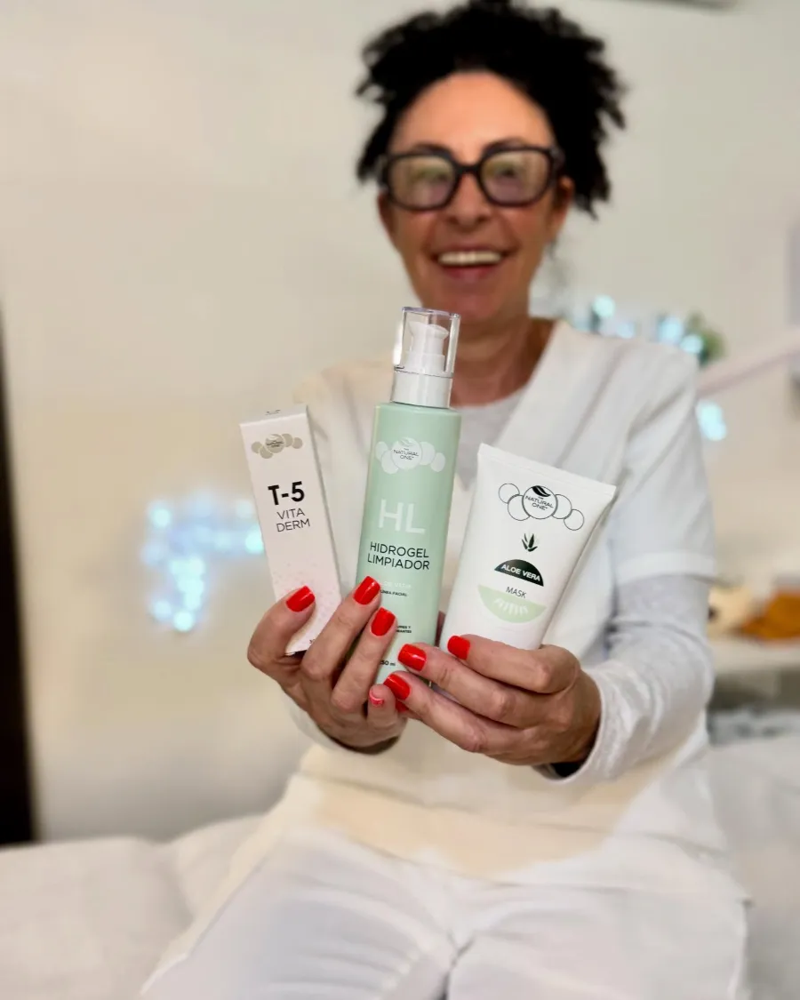
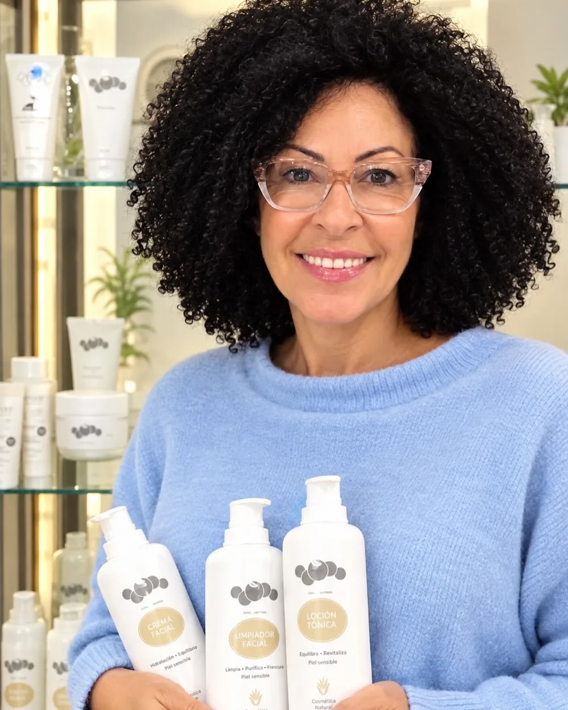
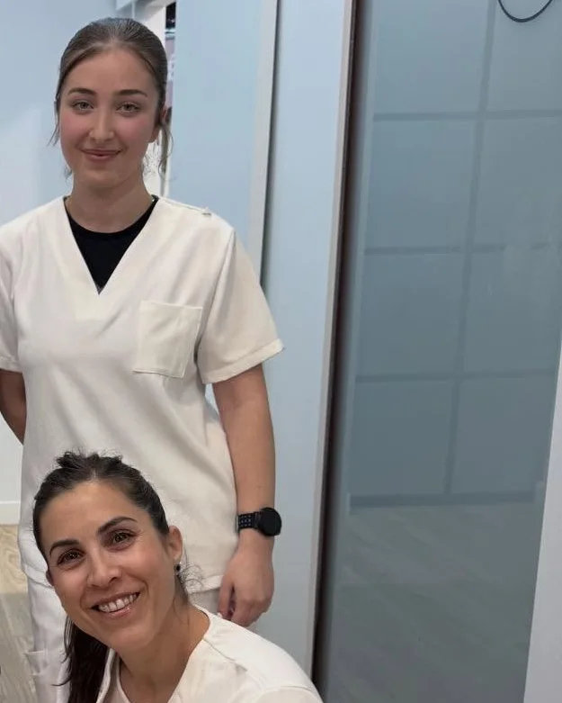
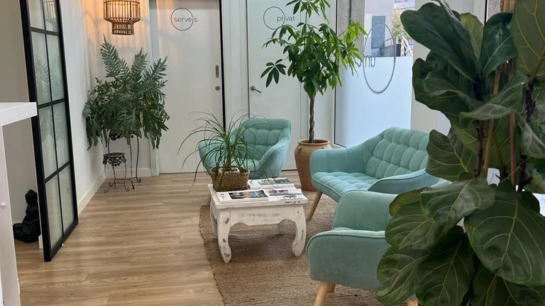

Únic. Centre fisiològic de la pell a Blanes
Tractaments de pell fets a mida amb el mètode The Natural One. Primer estudiem com és la teva pell; després la tractem, setmana a setmana, fins que recupera l'equilibri.
La pell respira, es defensa, envelleix i es repara. Per això la tractem com el que és: un òrgan viu. Res de protocols en sèrie: cada sessió es decideix segons com ha respost la teva pell.
Un mètode a mida per a cada pell
Treballem amb el mètode The Natural One, en quatre fases.
Estudi de la pell
Primera visita
Abans de cap tractament, estudiem la teva pell a fons: el biotip, com està ara, quins cosmètics fas servir i com et sents. La pell també reflecteix com estàs.
Fase d'equilibri
Al principi, cada setmana
Al principi et veiem cada setmana a cabina. Cada sessió s'adapta a com ha respost la pell la setmana anterior.
-
Cura a casa
Cada dia, a casa
Et preparem una rutina amb cosmètica The Natural One: fórmules magistrals amb ingredients naturals, sense perfums ni colorants, que respecten la fisiologia i el pH de la pell.

Cosmètica The Natural One per a la rutina de casa. Regeneració i manteniment
Quan la pell s'equilibra
Quan la pell recupera l'equilibri, la regenerem i espaiem les sessions. L'objectiu és que es mantingui sana per ella mateixa.
Segons The Natural One, més del 70 % dels desequilibris de la pell els provoquen cosmètics inadequats. Per això també et diem què has de deixar de fer servir.
Centre de confiança The Natural OneUn cas real:
la pell després d'un herpes
Després d'un brot d'herpes, aquesta pell va quedar molt alterada. Necessitava calma, constància i respecte pels seus temps.
- 2 mesos
- d'acompanyament amb el mètode The Natural One
- 2 sessions
- de tractament a cabina
- Cada dia
- una rutina a casa, adaptada al que demanava la pell
Resultat: una pell més calmada, més uniforme i de nou en equilibri.
Ho explica The Natural One a InstagramTractaments a mida per a cada pell
Pells amb desequilibris
Acne i pell grassaEn tres fases, amb sessions setmanals al principi
Rosàcia, dermatitis i pell sensibleCalmar la pell i reparar-ne la barrera
Taques i marquesTrobar l'origen de cada taca
Estètica oncològicaAbans, durant i després del tractament
Salut i bellesa
Estudi de la pellEl primer pas de qualsevol tractament
Full Lift · fermesa facialVuit sessions per reafirmar el rostre
Antiaging · Natural WellAgingHidratar, nodrir i regenerar amb consciència
Hidratació i lluminositatHidratació a les capes profundes
Cos i benestar
Massatges i corporalMassatge manual en un espai tranquil
Osteopatia clínica de l'ATMMandíbula, bruxisme i dolor facial
Àrea mèdicaMedicina estètica amb criteri mèdic
Estètica oncològica
Quan la pell passa per un moment difícil, hi som.
La quimioteràpia i la radioteràpia canvien la pell. La preparem abans, la cuidem durant el tractament i l'ajudem a recuperar-se després, amb productes sense components irritants i, sobretot, amb temps i escolta.
- Cura de la pell abans, durant i després de la quimioteràpia, la radioteràpia o la immunoteràpia.
- Taques, èczemes, herpes i sequedat extrema que poden aparèixer amb els tractaments.
- Drenatge limfàtic manual, sempre amb una valoració prèvia.
- Micropigmentació de celles i d'eyeliner amb la Vero, de Studiopro Beauty, amb l'autorització del teu equip mèdic.
«Hi ha llocs on fan tractaments. I hi ha llocs on et cuiden de debò.»


Montse Gayete i equip
Més de 20 anys cuidant la pell de Blanes, amb un equip format en el mètode The Natural One.
«Avui puc diagnosticar problemes de pell, tractar problemes molt seriosos i donar-los solucions.»
Escriu el teu nom.
Mira que única ets.
Cada nom dibuixa una empremta diferent. Com la teva pell.
4,9 a Google, amb 46 ressenyes
«Hi vaig cada mes i sempre en surto molt contenta amb el resultat. […] La Montse és una gran professional, molt atenta i curosa, i es nota que li agrada la seva feina.»
«[…] m'ha millorat moltíssim l'acne gràcies al tractament que m'han personalitzat; després de tants anys, torno a tenir la cara llisa.»
«Conec la Montse i el seu equip des de fa més de 20 anys, i allà on ella vagi, jo hi vaig.»
Carrer Jaume I, 4 17300 Blanes
- Dilluns
- Tancat
- Dimarts – divendres
- 9:00 – 13:0015:00 – 20:00
- Dissabte
- 9:00 – 13:00
- Diumenge
- Tancat
Els festius poden canviar l'horari: ho avisem a Instagram.
